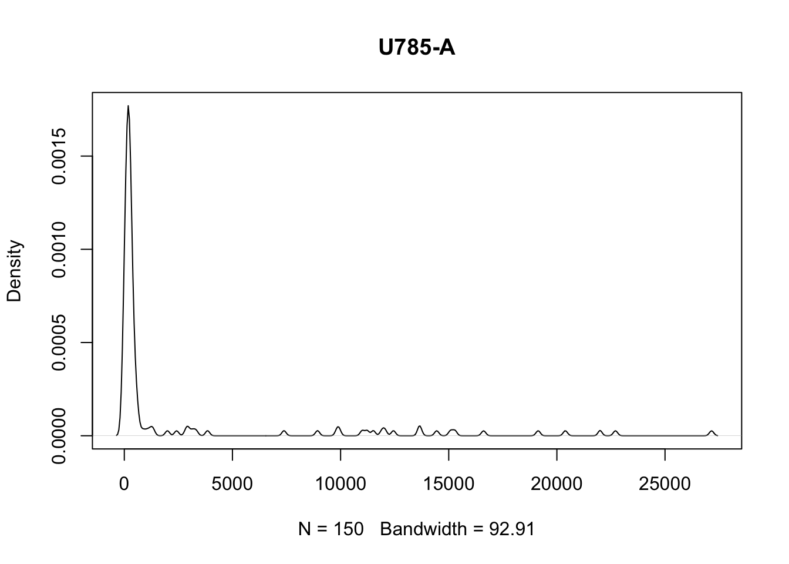
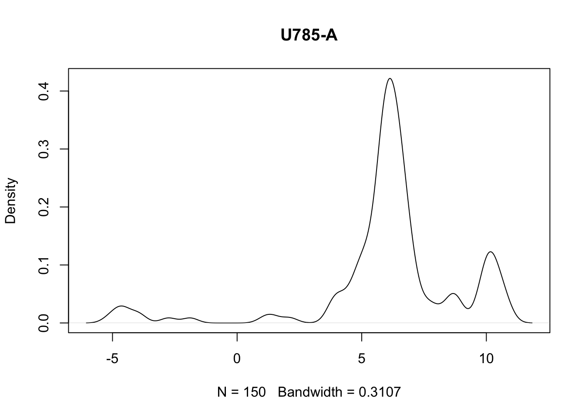

install.packages("BiocManager")
BiocManager::install("cytolib")
BiocManager::install("flowCore")
BiocManager::install("flowWorkspace")
BiocManager::install("ggcyto")
BiocManager::install("openCyto")
BiocManager::install("flowStats")
BiocManager::install("CytoML")Basics of working with FCS files
Introduction
Flow cytometry data (regardless of the type of instrument used) is generally saved as a .fcs file. This file is populated with raw data, fluorescence intensity (for optics based technologies) and abundance (for mass cytrometry), as well as various metadata including: user id, instrument id, dynamic range of instrument, etc. It is important to be able to interact with and manipulate the .fcs file as it gives the users/analysts fine grain control.
Installing/loading required libraries
You can install all the cytoverse packages as follows:
For the moment, we only need to load flowCore and flowWorkspace.
library(flowCore)
library(flowWorkspace)FlowRepository workshop data
In this workshop we will demonstrate the use of cytoverse packages to analyse publicly available datasets hosted on FlowRepository. The first dataset FR-FCM-Z5PC contains FCS files from a study assessing the post recovery immune phenotypes from patients infected with COVID-19. We are using a subset of the FCS files. The second dataset FR-FCM-ZZ36 contains FCS files for OMIP-018, a study designed to phenotype T cells for expression of various chemokine receptors.
The data required for this workshop, including subsets extracted from the FlowRepository datasets are made available inside vignettes/data folder.
cytoverse data structures for .fcs files
There are four main data structures that represent flow cytometry data in cytoverse: cytoframe, cytoset, GatingHierarchy and GatingSet.
cytoframe: a single .fcs file,cytoset: a list like object that can store multiple .fcs files,GatingHierarchy: a list like object that allows building and attaching gates and filter to acytoframeGatingSet: a list like object that allows building and attaching gates and filter to acytoset
Some of these have overlapping functionality, and we’ll eventually explain when you would prefer one data structure to another as we continue through this workshop.
Note:
There are additional legacy data structures called
flowFrame and flowSet in cytoverse that are analogous to cytoframe and cytoset in function. We will not use these data structures in this workshop.
Reading in FCS files
There are two preferred approaches to read in .fcs file(s) into R:
- Read in individual .fcs files as
cytoframe, - Read in a set of .fcs files as
cytoset,
(Additionally, you can read a workspace generated with another tool, such as FlowJo, using the CytoML package.)
The function load_cytoframe_from_fcs is used to read in individual file as a cytoframe object.
cf <- load_cytoframe_from_fcs("data/fcs-data/4000_BDC-CR1.fcs")
# a cytoframe object
cfcytoframe object '4000_BDC-CR1.fcs'
with 912254 cells and 33 observables:
name desc range minRange maxRange
$P1 FSC-A NA 262143 0.000 262143
$P2 FSC-H NA 262143 0.000 262143
$P3 SSC-A NA 262143 0.000 262143
$P4 B515-A CADM1 FITC 262143 -110.386 262143
$P5 B610-A CD141 BB630 262143 -111.000 262143
... ... ... ... ... ...
$P29 V710-A CD86 BV711 262143 -111 262143
$P30 V750-A CX3CR1 BV750 262143 -111 262143
$P31 V785-A HLA-DR BV786 262143 -111 262143
$P32 remove_from_FS_FM QC 262143 0 262143
$P33 Time NA 92 0 92
327 keywords are stored in the 'description' slot
row names(0):The cytoframe object has 3 slots where various data is stored.
exprs(cf)stores the expression matrix (i.e. the collected data),parameters(cf)stores information pertaining to channels: channel name, marker description,and data ranges as an AnnotatedDataFrame,keyword(cf)stores additional information extracted from the .fcs file header. The file header follow ISAC guidelines. Visit here for more information.
Working with cytoframe objects
A few useful definitions that help us get oriented with the underlying data in the cytoframe object.
- Channels: Instrument derived labels of various parameters that were measured. Channels are the column names of the
cytoframe. Any data generated from the same instrument will have the same (similar) Channel names. - Markers: User provided labels for various parameters that were measured. For example: Channel name: B710-A, Marker name: CD3 (in
cf). Marker names are set by the users and may not be unique across experiments/users. Not all channels are markers – some are physical parameters such as the forward scatter or side scatter. These channels will have their marker names set toNA. - Expression: Measured values. A matrix where every row is an event (frequently a cell) and every column is a channel.
Working with a cytoframe object is very similar to working with a data.frame in R, where a “row” is a cell and a “column” is a channel. In particular, subsetting with square brackets cf[i,j] or cf$ works as you might hope. An important difference, however, is that unlike most other functions in R, the subset and assignment operations DO NOT create a new copy of the data but simply provides an updated “view” of the data. Because this is quite unlike the rest of R, we will perseverate on this point.
Examples
Accessing parameter summary and metadata
Summary of measured parameters.
# parameters
parameters(cf) |> pData() # show as a dataframe name desc range minRange maxRange
$P1 FSC-A <NA> 262143 0.00000 262143
$P2 FSC-H <NA> 262143 0.00000 262143
$P3 SSC-A <NA> 262143 0.00000 262143
$P4 B515-A CADM1 FITC 262143 -110.38593 262143
$P5 B610-A CD141 BB630 262143 -111.00000 262143
$P6 B660-A CD123 BB660 262143 -111.00000 262143
$P7 B710-A FcER1a BB700 262143 -111.00000 262143
$P8 B780-A IgD BB790 262143 -111.00000 262143
$P9 G575-A IFNAR2 PE 262143 -111.00000 262143
$P10 G610-A CD88 PE-Dazzle594 262143 -111.00000 262143
$P11 G660-A CD3 PE-Cy5 262143 -111.00000 262143
$P12 G710-A CD5 PE-Cy55 262143 -111.00000 262143
$P13 G780-A CCR1 PE-Cy7 262143 -111.00000 262143
$P14 R670-A CD11c APC 262143 -111.00000 262143
$P15 R730-A CD27 APC-R700 262143 -111.00000 262143
$P16 R780-A XCR1 APC-Fire750 262143 -111.00000 262143
$P17 U390-A CCR3 BUV395 262143 -111.00000 262143
$P18 U450-A Live Dead UV Blue 262143 -102.92210 262143
$P19 U500-A CD40 BUV496 262143 -111.00000 262143
$P20 U570-A CD56 BUV563 262143 -100.80198 262143
$P21 U660-A CD21 BUV661 262143 -111.00000 262143
$P22 U740-A CD163 BUV737 262143 -111.00000 262143
$P23 U785-A CD20 BUV805 262143 -111.00000 262143
$P24 V450-A CCR2 BV421 262143 -111.00000 262143
$P25 V510-A CD14 BV510 262143 -106.44221 262143
$P26 V570-A CD16 BV570 262143 -111.00000 262143
$P27 V605-A CD38 BV605 262143 -93.17506 262143
$P28 V655-A CCR5 BV650 262143 -111.00000 262143
$P29 V710-A CD86 BV711 262143 -111.00000 262143
$P30 V750-A CX3CR1 BV750 262143 -111.00000 262143
$P31 V785-A HLA-DR BV786 262143 -111.00000 262143
$P32 remove_from_FS_FM QC 262143 0.00000 262143
$P33 Time <NA> 92 0.00000 92Various metadata present in the .fcs files.
# keywords
keyword(cf) |> head(10) # only show the first 10$FCSversion
[1] "3"
$`$FIL`
[1] "4000_BDC-CR1.fcs"
$`$TOT`
[1] "912254"
$`$PAR`
[1] "33"
$`$BYTEORD`
[1] "4,3,2,1"
$`$DATATYPE`
[1] "F"
$FJ_FCS_VERSION
[1] "3"
$`$BEGINANALYSIS`
[1] "0"
$`$BEGINSTEXT`
[1] "0"
$`$BTIM`
[1] "10:29:03"Channels, Expression, and Subsets
# channels
colnames(cf) [1] "FSC-A" "FSC-H" "SSC-A"
[4] "B515-A" "B610-A" "B660-A"
[7] "B710-A" "B780-A" "G575-A"
[10] "G610-A" "G660-A" "G710-A"
[13] "G780-A" "R670-A" "R730-A"
[16] "R780-A" "U390-A" "U450-A"
[19] "U500-A" "U570-A" "U660-A"
[22] "U740-A" "U785-A" "V450-A"
[25] "V510-A" "V570-A" "V605-A"
[28] "V655-A" "V710-A" "V750-A"
[31] "V785-A" "remove_from_FS_FM" "Time" # markernames
markernames(cf) B515-A B610-A B660-A B710-A
"CADM1 FITC" "CD141 BB630" "CD123 BB660" "FcER1a BB700"
B780-A G575-A G610-A G660-A
"IgD BB790" "IFNAR2 PE" "CD88 PE-Dazzle594" "CD3 PE-Cy5"
G710-A G780-A R670-A R730-A
"CD5 PE-Cy55" "CCR1 PE-Cy7" "CD11c APC" "CD27 APC-R700"
R780-A U390-A U450-A U500-A
"XCR1 APC-Fire750" "CCR3 BUV395" "Live Dead UV Blue" "CD40 BUV496"
U570-A U660-A U740-A U785-A
"CD56 BUV563" "CD21 BUV661" "CD163 BUV737" "CD20 BUV805"
V450-A V510-A V570-A V605-A
"CCR2 BV421" "CD14 BV510" "CD16 BV570" "CD38 BV605"
V655-A V710-A V750-A V785-A
"CCR5 BV650" "CD86 BV711" "CX3CR1 BV750" "HLA-DR BV786"
remove_from_FS_FM
"QC" # instrument channel ranges
range(cf, type = "instrument") FSC-A FSC-H SSC-A B515-A B610-A B660-A B710-A B780-A G575-A G610-A
min 0 0 0 -110.3859 -111 -111 -111 -111 -111 -111
max 262143 262143 262143 262143.0000 262143 262143 262143 262143 262143 262143
G660-A G710-A G780-A R670-A R730-A R780-A U390-A U450-A U500-A
min -111 -111 -111 -111 -111 -111 -111 -102.9221 -111
max 262143 262143 262143 262143 262143 262143 262143 262143.0000 262143
U570-A U660-A U740-A U785-A V450-A V510-A V570-A V605-A
min -100.802 -111 -111 -111 -111 -106.4422 -111 -93.17506
max 262143.000 262143 262143 262143 262143 262143.0000 262143 262143.00000
V655-A V710-A V750-A V785-A remove_from_FS_FM Time
min -111 -111 -111 -111 0 0
max 262143 262143 262143 262143 262143 92# expression
exprs(cf)[1:5, 1:5] FSC-A FSC-H SSC-A B515-A B610-A
[1,] 37806.11 33978.14 517.8660 136.6147 27.66158
[2,] 105788.00 91726.41 550.5819 230.8201 331.49930
[3,] 119658.92 96086.12 980.8203 275.5523 4240.47754
[4,] 65660.55 57019.41 795.2517 407.6333 244.19577
[5,] 119732.59 95060.98 555.4248 382.0113 648.48053# number of events
nrow(cf)[1] 912254# number of channels
ncol(cf)[1] 33Notice that there is a correspondence between channels, markers, and the expression matrix. i.e. the names of the named vector markernames(cf) are a subset of the columns of the expression matrix exprs(cf) as well as the columns of the cytoframe.
# interested marker: CD4
# easy to find which channel is mapped to CD4
CD4_chan <- flowCore::getChannelMarker(
frm = cf,
name = "CD4"
)$nameWarning in flowCore::getChannelMarker(frm = cf, name = "CD4"): CD4 is partially
matched with U500-ACD40 BUV496# inspect CD4_chan
CD4_chan[1] "U500-A"# extract expression of cd4
e_cd4 <- exprs(cf[, CD4_chan])
head(e_cd4) U500-A
[1,] 1422.2137
[2,] 199.7638
[3,] 344.7379
[4,] 2167.5317
[5,] 285.1899
[6,] 152.0994# subset cytorame by column
s_cf <- cf[, CD4_chan]
s_cfcytoframe object '4000_BDC-CR1.fcs'
with 912254 cells and 1 observables:
name desc range minRange maxRange
$P19 U500-A CD40 BUV496 262143 -111 262143
327 keywords are stored in the 'description' slot
row names(0):
cytoframe has been subsetted and can be realized through 'realize_view()'.# subset cytoframe by row
s2_cf <- cf[1:100, ]
s2_cfcytoframe object '4000_BDC-CR1.fcs'
with 100 cells and 33 observables:
name desc range minRange maxRange
$P1 FSC-A NA 262143 0.000 262143
$P2 FSC-H NA 262143 0.000 262143
$P3 SSC-A NA 262143 0.000 262143
$P4 B515-A CADM1 FITC 262143 -110.386 262143
$P5 B610-A CD141 BB630 262143 -111.000 262143
... ... ... ... ... ...
$P29 V710-A CD86 BV711 262143 -111 262143
$P30 V750-A CX3CR1 BV750 262143 -111 262143
$P31 V785-A HLA-DR BV786 262143 -111 262143
$P32 remove_from_FS_FM QC 262143 0 262143
$P33 Time NA 92 0 92
327 keywords are stored in the 'description' slot
row names(0):
cytoframe has been subsetted and can be realized through 'realize_view()'.Notice that the subset ([]) operation can be applied directly to the cytoframe object so that information regarding the file is preserved. Also, as indicated above, these operations provide an aliased view of the data without creating a copy.
Below, we show examples of how to manipulate the cytoframe object and create a copy using realize_view():
# create a new markername
new_name <- c("U785-A" = "test")
# create a new cytoframe subset
cf_sub <- cf[1:150, ] |> realize_view() # realize_view creates a new cytoframe, distinct from the original
# old markernames
markernames(cf_sub) B515-A B610-A B660-A B710-A
"CADM1 FITC" "CD141 BB630" "CD123 BB660" "FcER1a BB700"
B780-A G575-A G610-A G660-A
"IgD BB790" "IFNAR2 PE" "CD88 PE-Dazzle594" "CD3 PE-Cy5"
G710-A G780-A R670-A R730-A
"CD5 PE-Cy55" "CCR1 PE-Cy7" "CD11c APC" "CD27 APC-R700"
R780-A U390-A U450-A U500-A
"XCR1 APC-Fire750" "CCR3 BUV395" "Live Dead UV Blue" "CD40 BUV496"
U570-A U660-A U740-A U785-A
"CD56 BUV563" "CD21 BUV661" "CD163 BUV737" "CD20 BUV805"
V450-A V510-A V570-A V605-A
"CCR2 BV421" "CD14 BV510" "CD16 BV570" "CD38 BV605"
V655-A V710-A V750-A V785-A
"CCR5 BV650" "CD86 BV711" "CX3CR1 BV750" "HLA-DR BV786"
remove_from_FS_FM
"QC" # set new markername
markernames(cf_sub) <- new_name
markernames(cf_sub) B515-A B610-A B660-A B710-A
"CADM1 FITC" "CD141 BB630" "CD123 BB660" "FcER1a BB700"
B780-A G575-A G610-A G660-A
"IgD BB790" "IFNAR2 PE" "CD88 PE-Dazzle594" "CD3 PE-Cy5"
G710-A G780-A R670-A R730-A
"CD5 PE-Cy55" "CCR1 PE-Cy7" "CD11c APC" "CD27 APC-R700"
R780-A U390-A U450-A U500-A
"XCR1 APC-Fire750" "CCR3 BUV395" "Live Dead UV Blue" "CD40 BUV496"
U570-A U660-A U740-A U785-A
"CD56 BUV563" "CD21 BUV661" "CD163 BUV737" "test"
V450-A V510-A V570-A V605-A
"CCR2 BV421" "CD14 BV510" "CD16 BV570" "CD38 BV605"
V655-A V710-A V750-A V785-A
"CCR5 BV650" "CD86 BV711" "CX3CR1 BV750" "HLA-DR BV786"
remove_from_FS_FM
"QC" # manipulating expression values
# notice the data range
range(cf_sub[, "U785-A"]) U785-A
min -111
max 262143# visualise original channel ditribution
plot(
density(
exprs(cf_sub[, "U785-A"])
),
main = "U785-A"
)
# asinh transform
exprs(cf_sub)[, "U785-A"] <- asinh(exprs(cf_sub)[, "U785-A"])
# notice the data range after transformation
range(
cf_sub[, "U785-A"],
type = "instrument"
) U785-A
min -111
max 262143# visualise channel distribution
plot(
density(
exprs(cf_sub[, "U785-A"])
),
main = "U785-A"
)
Notice that the data range summary was not updated when we used <- to change the underlying expression matrix. A good practice is to use transform function to transform the underlying expression matrix. Importantly, transform also updates the data range summary. Moreover, transform can also be used to add new columns to the cytoframe.
Note: We will go over transformations in a later section.
Reading in a set of FCS files as a cytoset
In a experimental sense, a single .fcs file is not very interesting, since this represents only a single sample. To draw any conclusions, we’ll want replicates. When there are a set of .fcs files they can be loaded into R either as a cytoset.
cytoset: A collection of .fcs files, preferably, but not necessarily from the same panel/experiment.
cs <- load_cytoset_from_fcs(path = "data/fcs-data/")
csA cytoset with 6 samples.
column names:
FSC-A, FSC-H, SSC-A, B515-A, B610-A, B660-A, B710-A, B780-A, G575-A, G610-A, G660-A, G710-A, G780-A, R670-A, R730-A, R780-A, U390-A, U450-A, U500-A, U570-A, U660-A, U740-A, U785-A, V450-A, V510-A, V570-A, V605-A, V655-A, V710-A, V750-A, V785-A, remove_from_FS_FM, TimeA cytoset can also be indexed with square brackets cs[i,j], however now the row index i selects samples (individual FCS files) rather than cells. A cytoset also behaves like a list – a double bracket cs[[i]] selects a single sample as a cytoframe.
Generally, each FCS file replicate has unique metadata properties that can (and should) be supplied to the cytoset. These can be added after loading the cytoset by using pData(x) <- data.frame. The rownames of the data.frame must match the sampleNames of the cytoset.
# prior to providing metadata
pData(cs) name
4000_BDC-CR1.fcs 4000_BDC-CR1.fcs
4000_TNK-CR1.fcs 4000_TNK-CR1.fcs
4001_BDC-CR1.fcs 4001_BDC-CR1.fcs
4001_TNK-CR1.fcs 4001_TNK-CR1.fcs
4002_TNK-CR1.fcs 4002_TNK-CR1.fcs
4003_TNK-CR1.fcs 4003_TNK-CR1.fcs# create metadata
metadata <- data.frame(
Treatment = rep(c("Untreated","Treated"),
length.out = length(cs)
),
panel = ifelse(
grepl(
pattern = "TNK",
x = sampleNames(cs)
),
"T Cell Panel",
"Myeloid Panel"
)
)Let’s see what happens when rownames do not match!
# try to add metadata -- this leads to an error
pData(cs) <- metadataError: Invalid input type, expected 'character' actual 'integer'Now, we ensure that rownames of data.frame matches sampleNames of the cytoset.
# now it works
row.names(metadata) <- sampleNames(cs)
pData(cs) <- metadata
pData(cs) panel Treatment
4000_BDC-CR1.fcs Myeloid Panel Untreated
4000_TNK-CR1.fcs T Cell Panel Treated
4001_BDC-CR1.fcs Myeloid Panel Untreated
4001_TNK-CR1.fcs T Cell Panel Treated
4002_TNK-CR1.fcs T Cell Panel Untreated
4003_TNK-CR1.fcs T Cell Panel TreatedThe benefit of having metadata is that we can use many of the sub-setting operations in a metadata specific manner.
This is much more convenient than going back and forth between the full set of files.
# subset by files that have myeloid staining panel without creating a copy of the data
cs_myeloid <- cs[pData(cs)[["panel"]] == "Myeloid Panel",]
cs_myeloidA cytoset with 2 samples.
column names:
FSC-A, FSC-H, SSC-A, B515-A, B610-A, B660-A, B710-A, B780-A, G575-A, G610-A, G660-A, G710-A, G780-A, R670-A, R730-A, R780-A, U390-A, U450-A, U500-A, U570-A, U660-A, U740-A, U785-A, V450-A, V510-A, V570-A, V605-A, V655-A, V710-A, V750-A, V785-A, remove_from_FS_FM, TimepData(cs_myeloid) panel Treatment
4000_BDC-CR1.fcs Myeloid Panel Untreated
4001_BDC-CR1.fcs Myeloid Panel UntreatedCytoset views and aliasing
Many of the sub-setting operation for cytoframe are also applicable for cytoset. Similar to cytoframe sub-setting operations only create a new “view” of the data. For a complete copy of the data, realize_view should be used.
Below is an example of cytoset sub-setting which also highlights how the operations performed on cytoset affects the underlying data.
# demonstrate how cs point to the same underlying data
range(cs[[1, "B515-A"]]) B515-A
min -110.3859
max 262143.0000# subset and show prior to transformation
cs_small <- cs[1]
range(cs_small[[1, "B515-A"]]) B515-A
min -110.3859
max 262143.0000# create a transformList
trans <- transformList("B515-A",asinh)
# transform
cs_small <- transform(cs_small,trans)
# after transformation
range(cs_small[[1, "B515-A"]]) B515-A
min -5.397151
max 13.169792# whole cs
range(cs[[1, "B515-A"]]) B515-A
min -5.397151
max 13.169792As you see, the transformation was applied to a subset cs_small however the original cs was also altered highlighting that both objects were pointing to the same data. To confirm this, you can use cs_get_uri or cf_get_uri:
cs_get_uri(cs_small)[1] "/private/var/folders/8g/qvx6xyzs72q3wv286d96s_y91yzgmv/T/RtmpEgKalV/9b7e4910-760f-4d28-a1fd-9b309ac15ce6"cs_get_uri(cs)[1] "/private/var/folders/8g/qvx6xyzs72q3wv286d96s_y91yzgmv/T/RtmpEgKalV/9b7e4910-760f-4d28-a1fd-9b309ac15ce6"To perform a deep copy we can use realize_view()
# look at underlying expression
range(cs[[2, "B515-A"]]) B515-A
min -15.63437
max 262143.00000# subset and show prior to transformation
cs_small2 <- realize_view(cs[2])
range(cs_small2[[1, "B515-A"]]) B515-A
min -15.63437
max 262143.00000# create a transformList
trans <- transformList("B515-A",asinh)
# transform
cs_small2 <- transform(cs_small2,trans)
# after transformation
range(cs_small2[[1, "B515-A"]]) B515-A
min -3.44364
max 13.16979# whole cs
range(cs[[2, "B515-A"]]) B515-A
min -15.63437
max 262143.00000Notice that cs is left unchanged.
Adding additional .fcs files to cytoset
Lastly, we can also add additional .fcs files to a cytoset using cs_add_cytoframe.
# add to cytoset
cs_small <- realize_view(cs[1]) # cs[1] subsets cs into a cytoset while realize_view leads to a deep_copy into a new cytoset
cs_smallA cytoset with 1 samples.
column names:
FSC-A, FSC-H, SSC-A, B515-A, B610-A, B660-A, B710-A, B780-A, G575-A, G610-A, G660-A, G710-A, G780-A, R670-A, R730-A, R780-A, U390-A, U450-A, U500-A, U570-A, U660-A, U740-A, U785-A, V450-A, V510-A, V570-A, V605-A, V655-A, V710-A, V750-A, V785-A, remove_from_FS_FM, Time# no need to assign back to cs_small, because this function operates by reference and returns NULL anyways.
cs_add_cytoframe(
cs = cs_small,
sn = "Sample Name",
cf = cs[[3]] # cs[[3]] results in a cytoframe
)
cs_smallA cytoset with 2 samples.
column names:
FSC-A, FSC-H, SSC-A, B515-A, B610-A, B660-A, B710-A, B780-A, G575-A, G610-A, G660-A, G710-A, G780-A, R670-A, R730-A, R780-A, U390-A, U450-A, U500-A, U570-A, U660-A, U740-A, U785-A, V450-A, V510-A, V570-A, V605-A, V655-A, V710-A, V750-A, V785-A, remove_from_FS_FM, TimeFrom cytoset to cytoframe
It is possible that you may want to extract a cytoframe or extract all files as a list of cytoframe. We can either use [[ to directly grab a cytoframe or cytoset_to_list.
# extract a single cytoframe by using cs[[index/samplename]]
single_cf <- cs[[1]]
# convert to a list
list_of_cf <- cytoset_to_list(cs) List like operation with cytoset
As indicated previously, a cytoset behaves like a list. To leverage this behaviour we can use fsApply to iterate through the samples in a cytoset. By default, output is attempted to be coerced to a single array like object. (Set simplify = FALSE to return another list.)
# getting number of rows (cells) of individual cytoframes
n_cell_events <- fsApply(cs, nrow)
n_cell_events [,1]
4000_BDC-CR1.fcs 912254
4000_TNK-CR1.fcs 102015
4001_BDC-CR1.fcs 924474
4001_TNK-CR1.fcs 92703
4002_TNK-CR1.fcs 372224
4003_TNK-CR1.fcs 146150Saving your data
Saving your data is easy.
# save cytoframe
cf_write_disk(cf, "path/to/my_new_cf")
# save cytoset
save_cytoset(cs, path = "path/to/my/cs")Loading it back is just as easy.
# load cytoframe
load_cytoframe("path/to/my_cf")
# load cytoset
load_cytoset("path/to/my/cs")Conclusion
We went through multiple ways to import, interact with, and manipulate .fcs files using the cytoverse tools. It is important to note additional functionality, which we will not going to go over at this workshop for the sake of time, for further manipulation and even creation of .fcs files exist with the cytoverse. We encourage you to explore them further at your leisure by calling browseVignettes("flowWorkspace").